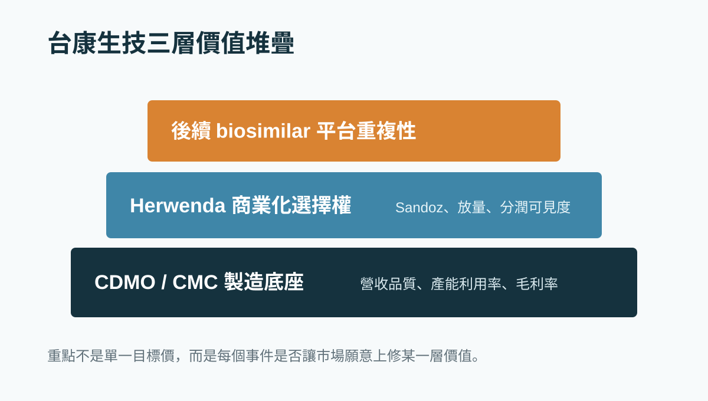

Drugnews
DrugnewsDrugnews library
研究文章庫
生技醫藥公司研究、臨床開發、BD 授權、估值框架與資本市場觀察，整理成可搜尋、可分類、可長期引用的中文長文。
月份歸檔
從 6 月開始往前整理，讓舊文逐步成為可回看的研究資料庫。
全部文章
用公司、藥物、技術、疾病、BD 或估值關鍵字搜尋。
RAS 標靶打開胰臟癌新局：生華科 CX-5461 卡位下一場「抗藥性管理」戰
Daraxonrasib 打開胰臟癌 RAS 標靶時代後，真正的下一場戰爭是抗藥性管理；生華科 CX-5461 的價值在於能否成為 RAS 標靶後時代的免疫增敏與聯合治療候選策略。

生醫公司 IR 不是把簡報變漂亮，而是把管線變成可追蹤的資本市場故事
好的 IR 內容不是宣傳話術，而是把臨床、CMC、監管、商業化與對標公司轉成投資人可以追蹤的節點。

70億美元核藥併購傳聞：Curium想買Lantheus，真正買的是一張核藥時代的入場券
Curium 傳出有意以約 70 億美元收購 Lantheus。這不只是核藥併購傳聞，而是診斷、製造、配送、院端網絡與治療端能力整合的產業訊號。

CAR-T 迎接新時代：從血癌走向自體免疫
Kyverna 啟動 mivocabtagene autoleucel 的 BLA 滾動式提交，象徵 CAR-T 從血癌治療走向自體免疫疾病的新階段，也重新打開細胞治療的商業想像。

沒有 AI 能力的藥廠，將不再被稱作藥廠
AI 正在從工具變成製藥公司的底層能力。未來藥廠不只比管線，也會比資料、模型、實驗自動化與決策速度，沒有 AI 能力的公司將愈來愈難被視為現代藥廠。

老靶點都很捲，但不是不能賺錢
熱門靶點擁擠不代表沒有價值；真正關鍵是公司能否在身位、差異化、適應症切入、技術換代與 BD 對接中找到自己的獲利位置。

從 Ruxolitinib cream 說起：外用 JAK 抑制劑，為什麼不是每個分子都能做？
外用 JAK 抑制劑的核心不是單純抑制 JAK，而是分子能否穿過皮膚、留在局部、降低全身暴露，並在適應症與製劑設計上建立差異化。

Retatrutide 殺進減重手術級別：禮來三重受體藥物，把肥胖治療推向新戰場
Eli Lilly 的 retatrutide 在三期試驗中把減重幅度推向接近手術級別，代表肥胖治療正從單一路徑抑制食慾，走向多受體代謝調控的新戰場。

40年沒藥的遺傳病迎來重磅進展
AATD 治療在近 40 年後迎來新療法競速，Sanofi、Wave、Beam 分別以長效重組蛋白、RNA 編輯與基因鹼基編輯切入，代表罕見遺傳病治療正從補蛋白走向根源修正。

Biogen 孤注一擲：Alzheimer’s Disease 研發墳場裡，tau 靶點能不能走出新路？
Biogen 在 BIIB080 / diranersen 的 Phase 2 CELIA 研究未達主要終點後仍推進 Phase 3，反映 AD 研發裡 tau 靶點的高風險、高需求與策略性押注。

核藥賣爆了
Pluvicto 單季銷售達 6.42 億美元，顯示攝護腺癌治療正從荷爾蒙訊號攻防，走向 PSMA 核醫診療一體化與放射配體療法的新階段。

台康生技合理估值怎麼看？CDMO 底座、Herwenda 選擇權與事件型重估
台康不是純 CDMO，也不是典型新藥股。真正要拆的是製造能力、Herwenda 商業化與後續平台重複性。

台灣生技估值第一步：不要把所有公司都塞進同一個本益比
台灣生技股最常見的錯誤，不是模型算錯一點，而是公司類型一開始就分錯。

第一三共最貴的一課：ADC 爆款之後，產能豪賭如何反噬？
第一三共因 ADC 供應鏈與產能承諾認列高額費用，提醒新藥公司與 CDMO：pipeline 要折現，產能也要折現。